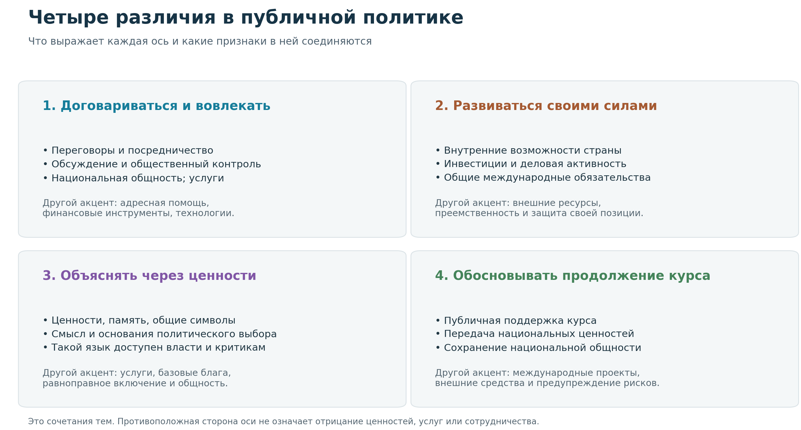
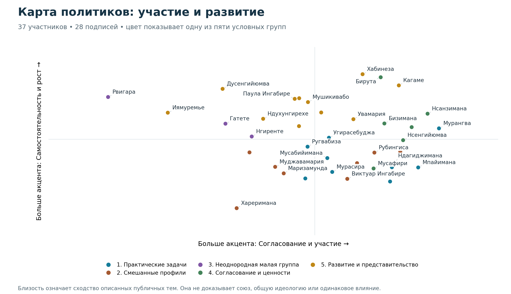
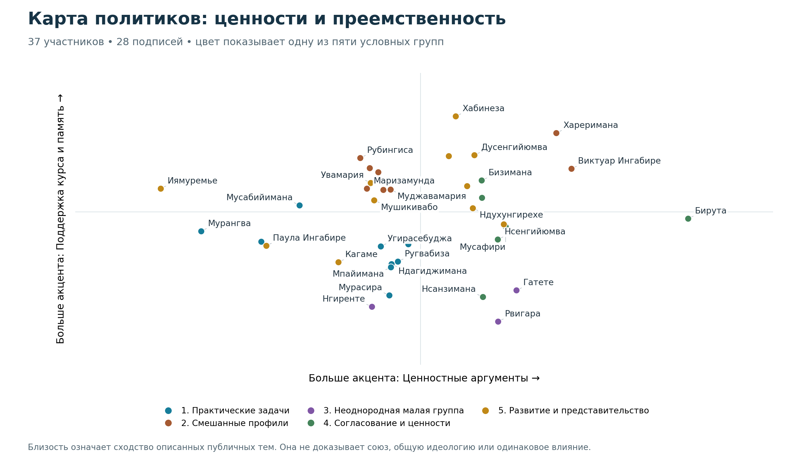
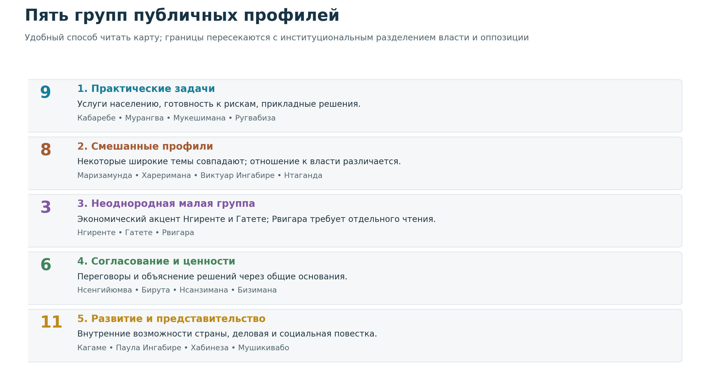

Руанда: власть, развитие и язык политической легитимности
Четыре измерения публичных позиций и пять групп политиков
Период исследования: 15 октября 2021 — 15 октября 2026 года Политологический отчёт · 18 октября 2026 года
В центре исследования — то, как заметные руандийские политики и публичные руководители говорят о развитии страны, участии общества, национальном единстве и основаниях власти. Сопоставление позволяет увидеть повторяющиеся сочетания тем и различия между публичными профилями. Оно описывает заявленные позиции и документированные действия, а не скрытые убеждения людей.
Основные выводы
• Развитие и национальная самостоятельность образуют общий язык многих участников. Споры о конкретных решениях возникают внутри широкой повестки роста, общественных услуг и способности страны обеспечивать собственное будущее. Общность таких целей сама по себе не устраняет политическую конкуренцию.
• Память и единство — важный способ объяснять политический курс. В публичной аргументации Кагаме восстановление страны связано с преодолением раскола. У критиков власти тоже есть ценностный язык, но он может обосновывать требование другого устройства управления.
• Четыре различия помогают отделить цели, способы согласования и политические обоснования. «Договариваться», «опираться на свои возможности», «ссылаться на ценности» и «поддерживать продолжение курса» — связанные, но разные характеристики.
• Пять полученных групп пересекают границу между властью и оппозицией. Это группы сходных публичных тем. Особенно осторожного прочтения требуют соседства Виктуар Ингабире с государственными фигурами и Дианы Рвигары с Нгиренте и Гатете: они не свидетельствуют о единстве политических программ.
• Центр государственного влияния связан с президентом и исполнительной властью. Число людей в группе на карте не измеряет её реальную силу. Президент, министр, оппозиционный претендент и международный чиновник располагают разными возможностями принимать решения.
• Отношения с Россией подтверждаются отдельными дипломатическими эпизодами. Эти свидетельства позволяют описывать действия конкретных лиц, но не дают оснований делить все группы на пророссийские и антироссийские.
1. Какую Руанду описывает исследование
В выборку вошли президент и главы правительства, министры, руководители парламента, столицы и провинции, кандидаты в президенты и другие оппозиционные фигуры. Отдельная часть — выходцы из руандийской государственной элиты, работавшие в международных организациях. Такой состав показывает несколько уровней публичной политики: принятие решений, исполнение программ, парламентское представительство, критику власти и внешнюю дипломатию. Это целенаправленно выбранные заметные фигуры, а не представительная выборка всех политиков или жителей страны.
Первая необходимая точка отсчёта — неравномерное распределение влияния. По окончательным официальным результатам президентских выборов 2024 года Кагаме получил 99,18%, Франк Хабинеза — 0,50%, Филипп Мпайимана — 0,32% действительных голосов. Эти цифры показывают официально зафиксированный результат выборов; они не являются самостоятельной оценкой свободы конкуренции или убеждений каждого гражданина. Источник: Национальная избирательная комиссия, таблица 14, с. 26.
Вторая точка отсчёта — различие возможностей политического участия. Хабинеза и Мпайимана участвовали в голосовании, тогда как Диана Рвигара не вошла в окончательный список кандидатов, а Виктуар Ингабире добивалась восстановления возможности выдвижения. Поэтому даже слово «оппозиция» объединяет здесь людей с разными отношениями с государственными институтами. Источники по каждому случаю приведены в справочнике.
Третья точка отсчёта — память о геноциде против тутси 1994 года. Она присутствует в обосновании национального единства и политической ответственности. Ниже это рассматривается как часть публичного языка: признание исторического опыта не означает автоматического согласия с любым сегодняшним решением государства.
«Основа всего — единство.»Перевод с английского. Оригинал: “The foundation of everything is unity.”Поль Кагаме · 2024-04-07 · Президент Руанды. Kwibuka 30 | Address by President Kagame
На церемонии тридцатой годовщины геноцида Кагаме представил единство как основание восстановления страны. Это объясняет, почему вопросы развития, безопасности и исторической памяти в руандийском публичном пространстве часто обсуждаются рядом. Такое прочтение контекста помогает понять оси карты, но не заменяет анализа отдельных высказываний.
2. Какие характеристики составили карту
Политиков сравнивали по тому, какие цели они формулируют, какие способы действия предлагают и чем объясняют свой выбор. Выраженность позиции отделена от количества публикаций о человеке: часто упоминаемый политик не получает более сильную характеристику только из-за медийной известности. Если позиция не установлена, её нельзя считать отрицательной.
В итоговую общую карту вошли 29 характеристик. Ниже они перечислены обычным языком; отдельный политик может сочетать несколько направлений. Например, международное сотрудничество совместимо с укреплением собственных ресурсов страны.
Область описания
Характеристики, вошедшие в карту
Экономика и жизненные возможности
Частная инициатива; экономические возможности недостаточно включённых групп; общественные услуги; внутренние возможности страны; доступность базовых благ; инвестиции и деловая активность.
Участие и политическая общность
Защита гражданских и политических прав; равенство и недискриминация; национальная общность; совместное обсуждение и общественный контроль; согласование институтов общей управленческой линией.
Программное изменение курса; продолжение курса; публичная поддержка курса; аргументация через ценности, память и символы; полемическая защита своей стороны; передача национальных ценностей; раскрытие проблем; защита репутации страны или политики.
Переговоры и внешние связи
Переговоры и посредничество; международная и региональная кооперация; привлечение внешних средств и партнёров; закрепление общих международных обязательств.
3. Четыре оси: что именно различается
Ось — это краткое название для характеристик, которые в описанных публичных профилях проявляются совместно. Человек может находиться далеко по одной оси и близко к середине по другой. Середина не означает политический центр, а направление влево или вниз — отрицательную оценку человека. Названия осей передают смысл сочетаний тем, а не их моральную ценность.

Диаграмма 1. Что стоит за четырьмя осями. Схема связывает каждую ось с понятными признаками. Одна характеристика может участвовать в нескольких сочетаниях; это не четыре взаимоисключающие идеологии.
Ось 1. Согласование и участие: как вовлекать людей и договариваться
На одном направлении соединяются переговоры, посредничество, общественное обсуждение, национальная общность и доступность услуг. Политическая задача здесь представляется как согласование интересов и включение людей в общее действие. Другой акцент связан с более адресными решениями: поддержкой определённых получателей, финансовыми мерами и технологическими инструментами.
Это различие между способами представления политики. Разговор об общественном участии может сопровождать государственную программу, международное посредничество или оппозиционное требование. Он ещё не показывает, насколько свободны дискуссия и конкуренция в действительности. На карте заметный акцент на согласовании имеют, в частности, Юсуф Мурангва, Сабин Нсанзимана и Филипп Мпайимана; их должности и конкретные задачи при этом различны.
«Систему руандийской “консенсусной демократии” необходимо перезапустить.»Перевод с английского. Оригинал: “Rwanda’s ‘consensual democracy’ system needs to be reset.”Виктуар Ингабире · 2022-10-05 · Лидер DALFA-Umurinzi; оппозиционный политик. It’s time for Rwanda to give non-violence a chance
Ингабире использует язык согласия для критики существующего устройства: в её авторской статье речь идёт о включении несогласных и гражданского общества. Это полезный пример того, почему похожие слова могут обозначать разные политические проекты. Возможная причина появления этой оси — необходимость публично объяснять, кого затрагивают решения и как достигается согласие вокруг них.
Ось 2. Ресурсная самостоятельность и рост: на чём строить развитие
Здесь соединяются опора на внутренние возможности, инвестиции, деловая активность и некоторые общие международные обязательства. На другом направлении заметнее привлечение внешних средств, преемственность и защитное отстаивание своей позиции. Практический вопрос оси: чем обеспечивать развитие и как объяснять его основания.
Поль Кагаме, Венсан Бирута и Франк Хабинеза находятся ближе к стороне внутренней самостоятельности. Это не делает их сторонниками одной программы. Их публичные позиции позволяют говорить о пересечении темы развития; выбор конкретных приоритетов и отношение к власти требуют отдельного чтения.
«путь опоры на собственные силы на деле позволил развиться многим продуктивным партнёрствам»Перевод с английского; отрывок предложения. Оригинал: “this journey of self-reliance has in fact allowed many productive partnerships to flourish”Поль Кагаме · 2024-09-05 · Президент Руанды. High-Level Meeting on State Governance 2024 Summit of the Forum on China-Africa Cooperation
Кагаме произнёс эти слова на форуме китайско-африканского сотрудничества в Пекине 5 сентября 2024 года. Сам контекст показателен: самостоятельность описывается вместе с продуктивными партнёрствами. Поэтому ось нельзя переводить как «изоляция — открытость». Политологически это способ совместить притязание на собственную дееспособность с работой во внешних экономических сетях.
Ось 3. Ценностные аргументы: почему политический выбор считается правильным
Третья ось сильнее выделяет аргументацию через ценности, коллективную память и символы. Её следует отличать от перечня конкретных услуг или способов распределить ресурсы. Она отвечает на вопрос «почему этот выбор оправдан», а не только «что именно будет сделано». На карте заметные позиции по этой оси занимают Бирута и Виктуар Ингабире.
Участники могут апеллировать к общей истории, справедливости, достоинству или включению, оставаясь политическими противниками. В этом смысле ценностная речь — общий инструмент борьбы за убедительность. Её появление в отдельной оси согласуется с политическим пространством, где споры о будущем страны тесно связаны с объяснением её прошлого и правом говорить от имени общества.
«управление Руандой необходимо реформировать, чтобы оно стало более терпимым к критике, демократичным и инклюзивным.»Перевод с английского; отрывок предложения. Оригинал: “the governance of Rwanda needs to be reformed so that it becomes more tolerant of critics, democratic and inclusive.”Виктуар Ингабире · 2023-11-21 · Основатель и председатель незарегистрированной на тот момент партии DALFA-Umurinzi; оппозиционный политик. Why President Kagame Should Not Run for a Fourth Term
Это формулировка самой Ингабире, а не итоговая оценка всех руандийских институтов. Она показывает самостоятельное содержание оппозиционной позиции: требование терпимости к критике и изменения управления. Сходство с государственными фигурами по другим темам не отменяет этого расхождения.
Ось 4. Поддержка курса и национальная память: как обосновывается преемственность
Четвёртая ось соединяет публичную поддержку действующего курса с передачей национальных ценностей и национальной общностью. Другой акцент связан с международной кооперацией, внешними ресурсами и прикладным предупреждением рисков. Содержательный смысл — различие между обоснованием продолжения общего пути и обсуждением конкретных механизмов развития.
Эта ось помогает отделить ценностный язык вообще от его использования для поддержки преемственности. Но её нельзя читать как шкалу личной верности Кагаме. Например, высокая позиция Франка Хабинезы по четвёртой оси не означает установленной поддержки президента: такого отдельного свидетельства в его профиле нет. На положение человека влияет сочетание нескольких характеристик.
Вероятное политическое основание этой темы — связь национального проекта с памятью о восстановлении страны. При этом у международных руководителей и отраслевых специалистов больше поводов говорить о практических инструментах. Это интерпретация контекста, а не доказанная причинная история появления каждой оси.
4. Как читать карты политиков
Каждая точка — один человек. Движение вправо или вверх означает больший акцент на теме, написанной у соответствующей оси. Цвет показывает условную группу, составленную с учётом всех четырёх различий. На одной плоской картинке видны только два различия, поэтому точки разного цвета могут оказаться рядом. Для полного чтения нужно сопоставить обе карты.
На каждой карте подписаны 28 человек: наиболее полно описанные, а также важные для понимания власти и оппозиции фигуры. Ещё 9 точек оставлены без подписи, чтобы фамилии не перекрывали друг друга; все они перечислены в составах групп ниже. Пять участников с особенно неполными публичными профилями представлены только в справочнике. Ни подпись, ни её отсутствие не являются рейтингом влиятельности.

Диаграмма 2. Участие и развитие. По горизонтали — согласование и участие; по вертикали — самостоятельность и рост. Например, Кагаме расположен в направлении обеих тем; Бирута — особенно в направлении самостоятельности. Низкая координата не означает отрицания переговоров или развития.
На первой карте полезно смотреть не только на расстояние между фамилиями, но и на различие направлений. У Нгиренте и Гатете согласование выражено относительно слабее, чем у Мурангвы или Нсанзиманы. Это различие публичных профилей, а не сравнение качества их работы. Рвигара стоит отдельно слева; её соседство с экономическими руководителями требует проверки по конкретным известным позициям, а не вывода из одного местоположения.

Диаграмма 3. Ценности и преемственность. По горизонтали — ценностные аргументы; по вертикали — поддержка курса и национальная память. Высокая позиция по составной оси не позволяет приписать человеку каждую отдельную характеристику этой оси.
Вторая карта показывает, почему четыре оси добавляют смысл: Бирута заметно выделяется ценностной аргументацией, но не находится на краю поддержки преемственности. Хабинеза расположен высоко по четвёртой оси, однако остаётся электоральным соперником Кагаме. Иямуремье заметно смещён в другую сторону по третьей оси; это не означает отсутствия у него ценностей или исторической памяти.
5. Пять групп: какие сочетания тем сближают участников
Группы помогают организовать чтение большого числа профилей. Их названия описывают преобладающие сочетания тем и не являются названиями партий, фракций или коалиций. Участники одной группы могут резко расходиться по вопросам, которые общая карта передаёт недостаточно полно.

Диаграмма 4. Пять групп и их основные акценты. Число слева — количество участников. На схеме приведены примеры фамилий; полный состав каждой группы указан в тексте. Размер группы не равен её политическому весу.
Группа 1. Практические задачи, услуги и предупреждение рисков — 9 человек
Состав: Джеймс Кабаребе; Альбер Мурасира; Эмманюэль Угирасебуджа; Юсуф Мурангва; Уззиэль Ндагиджимана; Жерардин Мукешимана; Жан-Клод Мусабийимана; Филипп Мпайимана; Валентин Ругвабиза.
Эта группа объединяет разнородные институциональные роли: безопасность, финансы, местное управление, сельское развитие и международную работу. В описанных позициях заметны услуги населению, подготовка к рискам и прикладные решения. Ценностное обоснование выражено здесь относительно слабее, чем в некоторых других профилях; это не означает отсутствия ценностей у участников.
Мурасира связан с чрезвычайными ситуациями, Мурангва и Ндагиджимана — с финансовым управлением, Мукешимана — с аграрным развитием. Такой набор должностей делает практическую повестку понятной. Однако наличие Кабаребе, Мпайиманы и Ругвабизы показывает предел названия: это не единый «технократический блок». В частности, у Кабаребе и Мпайиманы слишком мало одинаково описанных характеристик, чтобы приписывать им общую политическую программу.
Группа 2. Смешанные институциональные и оппозиционные профили — 8 человек
Здесь находятся представители оборонной, парламентской и территориальной власти рядом с Виктуар Ингабире и Бернаром Нтагандой. Внешне это самое неожиданное объединение. Его разумное прочтение — совпадение части широких публичных тем: национальной общности, ценностных аргументов, общественных проблем и защиты своей позиции.
У Ингабире и Харериманы сходно описаны несколько таких тем, но смысл их политических требований различается. У Нтаганды и Маризамунды совпадение широких характеристик тоже не показывает, кого именно они критикуют и какие правила власти поддерживают. Поэтому группу следует сохранить как результат сопоставления профилей, но не превращать в политологический тезис о союзе власти и оппозиции. Прямая критика правительства необходима для содержательного различения этих участников.
Группа 3. Неоднородная малая группа: Нгиренте, Гатете и Рвигара — 3 человека
У Нгиренте и Гатете прослеживаются экономические и международные акценты: развитие, внешние ресурсы, технологии и обязательства. Их биографии помогают понять этот язык — руководство правительством, финансовые ведомства и затем международная экономическая работа. Но Диана Рвигара попала рядом при гораздо менее полном описании её позиций.
По Рвигаре не установлены многие экономические и международные характеристики, заметные у двух других участников. Её нельзя называть сторонницей их модели развития. Политологически здесь обоснован вывод о сходстве экономического языка Нгиренте и Гатете; положение Рвигары остаётся отдельным случаем, которому нельзя придавать такую же содержательную определённость.
«Чтобы получить необходимые ресурсы, нам нужен эффект масштаба.»Перевод с английского. Оригинал: “We need economies of scale to generate the resources required.”Клавер Гатете · 2024-07-18 · Заместитель Генерального секретаря ООН и исполнительный секретарь Экономической комиссии ООН для Африки; в данном выступлении не министр Руанды. Statement by Claver Gatete at the 45th Ordinary Session of the Executive Council
Гатете говорил об эффекте масштаба на заседании Исполнительного совета Африканского союза 18 июля 2024 года. Здесь он выступал как руководитель Экономической комиссии ООН для Африки: региональное сотрудничество рассматривалось как способ расширить ресурсы. Это общеафриканский институциональный мандат, а не только позиция правительства Руанды.
Группа 4. Согласование и ценностная аргументация — 6 человек
В этой группе сочетаются более заметные переговорные и ценностные акценты. Решение представляется не только как набор мер, но и как выбор, который нужно согласовать и обосновать. В профилях части участников присутствуют внутренние возможности страны, рост и привлечение партнёров.
Бирута связывает дипломатический и внутренний управленческий опыт; Бизимана — национальную память и единство; Нсанзимана — здравоохранение и работу с рисками; Гатаре — продвижение инвестиций. Разные портфели сходятся в необходимости объяснять решения и обеспечивать взаимодействие. Это полезное чтение их публичных ролей, но не доказательство существования отдельной неформальной фракции.
Группа 5. Внутреннее развитие и публичное представительство — 11 человек
Самая многочисленная группа объединяет президента, ряд государственных и парламентских руководителей, международную фигуру и легального оппозиционного кандидата. По сравнению с другими профилями здесь заметны инвестиции, деловая активность и внутренние возможности развития. Общественные услуги также входят в описанный набор тем.
Кагаме и Хабинеза могут говорить о развитии и благосостоянии, оставаясь соперниками. Паула Ингабире представляет цифровую модернизацию; Акаманзи — опыт продвижения инвестиций; Мушикивабо — международное представительство. Поэтому группу удобно читать как широкий круг публичных профилей развития, внутри которого расходятся задачи и политические позиции. Она неоднородна: нельзя переносить слова президента на всех её участников.
«где любой руандиец уверен, что у него будет еда, и никто не голодает»Перевод с английского; отрывок предложения. Оригинал: “where any Rwandan is certain of food and no one goes hungry”Фрэнк Хабинеза · 2024-05-20 · Председатель Демократической зелёной партии Руанды, претендент на участие в президентских выборах. Democratic Green Party’s Frank Habineza files his presidential candidature
Эту цель Хабинеза сформулировал при подаче документов на выборы в мае 2024 года; прямую речь опубликовал сайт его партии. Продовольственная обеспеченность — конкретный пример того, как общий разговор о развитии получает социальное содержание у легальной оппозиции. Сама цитата выражает намерение, а не свидетельство достигнутого результата.
Кто наиболее влиятелен
Если говорить о государственных решениях, центральное положение занимает президент Кагаме и связанная с исполнительной властью система должностей. Его вхождение в пятую группу не делает всю эту группу единым центром принятия решений. Чиновники исполнительной власти распределены по нескольким группам; международные руководители обладают иным мандатом, а оппозиционные фигуры — другими каналами влияния. Политический вес нужно устанавливать по полномочиям и доступу к институтам, а не по числу соседей на карте.
6. Три случая, которые защищают от неверного прочтения
Кагаме и Хабинеза: общие вопросы не означают одинаковые ответы
Оба присутствуют в круге развития и представительства. В описанных позициях пересекаются темы базовых благ, деловой активности и проверяемого знания. Но Хабинеза участвовал в выборах как соперник президента, а его программное обновление описано иначе. Нужный вывод — общая значимость развития в публичном споре. Вывод об одинаковой идеологии или поддержке действующего президента из этого не следует.
Виктуар Ингабире и государственные фигуры: важен адресат критики
Слова о национальной общности, ценностях, проблемах и общественных услугах встречаются у разных сторон. Когда вопрос звучит широко, позиции могут выглядеть близкими. Однако требование Ингабире изменить управление и расширить терпимость к критикам задаёт самостоятельную политическую линию. Чтобы понять разногласие, нужно знать не только тему высказывания, но и адресат, предлагаемое изменение и отношение к существующим правилам.
Диана Рвигара, Нгиренте и Гатете: неполное знание ограничивает вывод
Рвигара описана по меньшему числу направлений. Некоторые общие характеристики совпали с профилем Гатете, но по ряду ключевых экономических тем о ней недостаточно сведений. Поэтому её соседство не доказывает ни экономической коалиции, ни совпадения внешнеполитической ориентации. Для читателя это сигнал оставить вопрос открытым, сохранив известное различие их политических ролей.
7. Отношения с Россией: что можно сказать по конкретным свидетельствам
Подтверждённый эпизод — встреча Оливье Ндухунгирехе с Сергеем Лавровым на министерской конференции Форума партнёрства Россия–Африка в Сочи 9 ноября 2024 года. По сообщению МИД Руанды, подписано соглашение о безвизовых поездках владельцев дипломатических и служебных паспортов. Это пример развития официальных двусторонних контактов. Источник: МИД Руанды.
Из этого факта не следует общий безвизовый режим для туристов, поддержка российских военных действий или единство взглядов всех чиновников. Тем более он не характеризует автоматически всю пятую группу, в которую входит министр. Там, где нет персонального свидетельства, позиция остаётся неизвестной. Карта не устанавливает самостоятельные пророссийский и антироссийский лагеря.
Контрастный пример — заявление Мушикивабо от 24 февраля 2023 года в должности генерального секретаря Франкофонии. В нём выражены обеспокоенность продолжающейся российской агрессией против Украины и солидарность с украинским народом. Это позиция в международном мандате OIF; её нельзя приписывать всему правительству Руанды. Так даже внутри одной группы соседствуют разные роли и разные предметы внешнеполитических высказываний. Источник: официальное заявление OIF.
8. Что эта картина говорит о политических тенденциях
Первое — борьба за убедительное объяснение развития. Экономические возможности, услуги и способность страны действовать самостоятельно образуют важное поле публичных аргументов. Внутри него различаются прикладные решения, привлечение партнёров и язык национальной самостоятельности. Это позволяет изучать конкуренцию за содержание развития, не сводя её заранее к привычной европейской оси «левые — правые».
Второе — политическое значение исторической памяти. В речи президента единство связывается с восстановлением страны. В общей карте ценностная аргументация отделяется от поддержки преемственности. Это различение существенно: отсылка к ценностям может подтверждать существующий порядок или обосновывать его изменение. Оно помогает не приравнивать национальную идентичность к единственному допустимому политическому выбору.
Третье — различие между общим словарём и правилами доступа к власти. Похожие социальные и национальные темы встречаются по разные стороны политической конкуренции. Поэтому наиболее острое расхождение может заключаться в том, кто вправе участвовать, критиковать и предлагать альтернативу. Это видно в конкретных историях кандидатов и авторских позициях оппозиции; сама близость точек этот конфликт не устраняет.
Четвёртое — международная работа расширяет язык публичных руководителей. Миротворчество, региональные ресурсы и дипломатический диалог формируют темы Ругвабизы, Гатете и Мушикивабо. Их руандийское происхождение делает биографии частью этого пространства, но международная должность требует отличать их мандат от национальной государственной политики.
«Наш подход, сочетающий гибкость и твёрдость, последовательно сохраняет возможности для диалога и переговоров.»Перевод с французского. Оригинал: “Notre approche, qui allie souplesse et fermeté, entretient résolument les voies du dialogue et de la négociation.”Луиза Мушикивабо · 2024-09-17 · Генеральный секретарь Международной организации Франкофонии (OIF); в данном выступлении не представитель правительства Руанды. Compte rendu n° 3 — Audition de Mme Louise Mushikiwabo, 17 septembre 2024
На слушаниях во французском парламенте 17 сентября 2024 года Мушикивабо говорила от имени Международной организации Франкофонии. Сочетание диалога и твёрдости показывает, как международная роль создаёт самостоятельный публичный профиль. Это иллюстрация темы, а не утверждение о том, что Мушикивабо должна находиться рядом с любым другим дипломатом на карте.
9. Кто есть кто: все 42 участника
Должности ниже привязаны к подтверждённым моментам исследуемого периода. Это справочник для понимания высказываний и политических траекторий, а не полный перечень действующих должностных лиц на октябрь 2026 года. Одинаковые или похожие имена различаются по оригинальному написанию. Паула Ингабире — министр; Виктуар Ингабире — оппозиционная фигура.
Пять человек включены в справочник, но не получают основную групповую принадлежность из-за недостаточно полного описания позиций: Жюдит Увизейе, Инес Мпамбара, Кристофер Каюмба, Поль Русесабагина и Фостен Каюмба Ньямваса. Их отсутствие на картах не означает политической незначимости.
Центральное руководство
Поль Кагаме · Paul Kagame
Президент Руанды и центральная фигура действующей системы власти; 11 августа 2024 года вступил в новый пятилетний срок. Его публичная повестка соединяет национальную самостоятельность, единство страны и экономическое развитие, поэтому он служит важной точкой отсчёта при сопоставлении остальных участников.
Период/дата: Инаугурация: 11.08.2024. Группа 5: развитие и представительство.
Руководил правительством в первой части исследуемого периода и 25 июля 2025 года передал полномочия Жюстену Нсенгийюмве. Как премьер-министр координировал исполнение правительственной политики, поэтому его выступления помогают понять управленческие приоритеты до смены главы кабинета.
Период/дата: Роль подтверждена 25.02.2025; преемник назначен 23.07.2025; церемония передачи полномочий 25.07.2025. Группа 3: неоднородная малая группа.
Экономист, назначенный премьер-министром 23 июля 2025 года и принёсший присягу 25 июля; перед назначением работал заместителем главы Национального банка Руанды. Его переход от центрального банка к руководству правительством связывает финансово-экономическую компетенцию с общегосударственной повесткой.
Период/дата: Назначение 23.07.2025; присяга и передача полномочий 25.07.2025. Группа 4: согласование и ценности.
В первой части периода возглавлял МИД, а 12 июня 2024 года перешёл на пост министра внутренних дел. Ранее руководил Сенатом и несколькими министерствами; его траектория позволяет увидеть связь дипломатии, государственного управления и обеспечения внутренней безопасности.
Период/дата: Переход в МВД: 12.06.2024. Группа 4: согласование и ценности.
Кадровый дипломат, назначенный министром иностранных дел и международного сотрудничества 12 июня 2024 года; до этого представлял Руанду в Нидерландах. В исследовании важен как публичный представитель внешнеполитической позиции государства, особенно в вопросах региональной безопасности и отношений с внешними партнёрами.
Период/дата: Назначение: 12.06.2024. Группа 5: развитие и представительство.
Бывший военачальник, принявший обязанности государственного министра по региональному сотрудничеству в октябре 2023 года. Его переход на дипломатический пост отражает тесную связь вопросов безопасности с отношениями Руанды с соседями.
Период/дата: Передача полномочий: 04.10.2023. Группа 1: практические задачи.
Принял полномочия министра обороны в июне 2023 года; его пребывание на посту подтверждено также составом правительства августа 2024 года. Представляет оборонное направление государственной политики и участие страны в международном сотрудничестве по безопасности.
Период/дата: Вступление в должность: 07.06.2023; подтверждён в августе 2024. Группа 2: смешанные профили.
В начале исследуемого периода выступал как министр обороны, а в правительстве августа 2024 года занимал пост министра по чрезвычайным ситуациям. Его публичная работа позволяет сопоставить военную безопасность с гражданской защитой и готовностью к кризисам.
Период/дата: Подтверждённая роль: 16.08.2024. Группа 1: практические задачи.
В материалах 2022–2024 годов — министр юстиции и главный юридический советник и представитель государства (Attorney General), ранее возглавлял Восточноафриканский суд. Его ведомство готовит правовые решения и представляет государство в спорах.
Период/дата: Государственная роль подтверждена в 2022–2024 годах. Группа 1: практические задачи.
Возглавил Министерство финансов и экономического планирования в июне 2024 года. Через представление бюджета и обсуждение доступа населения к финансовым услугам раскрывает экономические приоритеты правительства и способы их практической реализации.
Период/дата: Начало роли по EADB: 12.06.2024. Группа 1: практические задачи.
Министр финансов и экономического планирования до июня 2024 года, предшественник Юсуфа Мурангвы. Его присутствие позволяет учесть финансово-экономическую повестку первой части периода и не приписывать все пятилетние решения одному руководителю.
Период/дата: Завершение роли по EADB: 12.06.2024. Группа 1: практические задачи.
Министр информационно-коммуникационных технологий и инноваций, занимавшая этот пост в правительстве августа 2024 года. Представляет цифровую модернизацию государства: развитие технологической инфраструктуры, навыков и условий для инновационного бизнеса.
Период/дата: Подтверждённая роль: 16.08.2024. Группа 5: развитие и представительство.
Врач и эпидемиолог, назначенный министром здравоохранения в ноябре 2022 года. Его публичные выступления по готовности к эпидемиям и реагированию на вспышку болезни Марбург в 2024 году показывают, как научное знание превращается в решения по защите населения.
Период/дата: Назначение: ноябрь 2022; публичная роль подтверждена в 2023–2024 годах. Группа 4: согласование и ценности.
Министр в канцелярии президента в составе правительства августа 2024 года. Её роль относится к президентскому уровню государственного управления, а не к отдельному отраслевому министерству.
Период/дата: Подтверждённая роль: 16.08.2024. В справочнике; без основной группы.
Министр в канцелярии премьер-министра, назначенная в феврале 2020 года и представленная в этой роли внутри исследуемого периода. Её институциональное место связано с координацией работы правительства и исполнением общих государственных программ.
Период/дата: Назначение: 26.02.2020; роль повторно подтверждена 16.08.2024. В справочнике; без основной группы.
Министр окружающей среды в составе правительства августа 2024 года. Представляет экологическую и климатическую повестку, позволяя увидеть, какое место природоохранные ограничения занимают рядом с задачами экономического роста.
Период/дата: Подтверждённая роль: 16.08.2024. Группа 5: развитие и представительство.
В исследуемом периоде занималась экологической политикой, а в июне 2024 года приняла портфель государственной службы и труда. В справочнике фиксируются эти исторические роли без утверждения, что июньское назначение сохранялось до конца периода.
Период/дата: Назначение: 12.06.2024; передача полномочий: 14.06.2024. Группа 2: смешанные профили.
Руководила Министерством сельского хозяйства в первой части периода, а 28 августа 2023 года вступила в должность вице-президента Международного фонда сельскохозяйственного развития ООН — IFAD. Её последующая работа относится к международному развитию сельских территорий, поэтому выступления в IFAD нельзя автоматически считать заявлениями правительства Руанды.
Период/дата: Вступление в должность IFAD: 28.08.2023. Группа 1: практические задачи.
Назначен министром сельского хозяйства и животноводства в марте 2023 года и представлен в правительстве августа 2024 года. Его портфель связан с производительностью сельского хозяйства, положением фермеров и продовольственным обеспечением.
Период/дата: Сообщение о назначении: 02.03.2023; подтверждение: 16.08.2024. Группа 4: согласование и ценности.
Министр местного самоуправления в датированных материалах 2023–2024 годов. Представляет связь центрального правительства с территориальной администрацией — уровень, на котором национальные программы должны превращаться в решения для местных жителей.
Период/дата: Подтверждённые роли: 15.12.2023 и 16.08.2024. Группа 1: практические задачи.
Министр национального единства и гражданской активности в составе правительства августа 2024 года, ранее руководитель Национальной комиссии по борьбе с геноцидом. Его специализация помогает понять особое место исторической памяти, национального единства и предотвращения расколов в политическом языке Руанды.
Период/дата: Подтверждённая роль: 16.08.2024. Группа 4: согласование и ценности.
Возглавляла государственный Rwanda Development Board — агентство продвижения инвестиций, бизнеса и туризма — до сентября 2023 года; с 23 января 2024 года перешла на пост генерального директора NBA Africa. В исследовании важен её опыт государственной политики развития, тогда как последующие выступления в NBA Africa относятся уже к корпоративной роли.
Период/дата: RDB: до 27.09.2023; NBA Africa: начало работы 23.01.2024. Группа 5: развитие и представительство.
Возглавил Rwanda Development Board в сентябре 2023 года; исполнение этой роли подтверждается также официальными материалами декабря 2024 года. Представляет политику привлечения инвестиций, развития частного сектора и продвижения Руанды как делового и туристического центра.
Период/дата: Начало: 27.09.2023; повторное подтверждение: 09.12.2024. Группа 4: согласование и ценности.
Избрана спикером Палаты депутатов в августе 2024 года. Возглавляет нижнюю палату парламента нового созыва, поэтому её выступления раскрывают парламентскую сторону государственной повестки и регионального сотрудничества.
Период/дата: Начало роли: 14.08.2024. Группа 2: смешанные профили.
Возглавляла Палату депутатов до смены руководства в 2024 году, затем вошла в Сенат четвёртого созыва. Позволяет проследить преемственность парламентского руководства и различать работу в нижней и верхней палатах.
Период/дата: Палата депутатов: подтверждено в 2023 году; Сенат: четвёртый созыв с 2024 года. Группа 5: развитие и представительство.
Юрист и бывший депутат Восточноафриканской законодательной ассамблеи, избранный председателем Сената в январе 2023 года и переизбранный в сентябре 2024 года. Представляет руководство верхней палаты, где законодательная работа связана с надзором за деятельностью государственных институтов.
Период/дата: 09.01.2023–25.09.2024; следующий срок с 26.09.2024. Группа 2: смешанные профили.
Председатель Сената до декабря 2022 года, то есть в начальной части исследуемого периода. Его присутствие позволяет учитывать парламентскую повестку до прихода Франсуа-Ксавье Калинды и не смешивать разные этапы руководства палатой.
Период/дата: 17.10.2019–09.12.2022. Группа 5: развитие и представительство.
В сентябре 2024 года избрана вице-президентом Сената по финансам и административным вопросам. Представляет не только общую парламентскую дискуссию, но и руководство организационной стороной работы верхней палаты.
Период/дата: Избрание: 26.09.2024. Группа 5: развитие и представительство.
Заместитель спикера Палаты депутатов в парламентских материалах 2023 года. Включён как участник руководства нижней палаты наряду с её председателями, что расширяет представление о парламентском управлении.
Период/дата: Официальное событие: 12.09.2023. Группа 2: смешанные профили.
В первой части периода был мэром Кигали, а в декабре 2023 года перешёл на пост губернатора Восточной провинции. Его траектория соединяет управление столицей с провинциальным уровнем, где государственные программы реализуются за пределами главного города.
Период/дата: Переход между ролями: декабрь 2023. Группа 2: смешанные профили.
Избран мэром Кигали в декабре 2023 года. Представляет управление столицей — отдельный масштаб политики, связанный с городской инфраструктурой, услугами населению и реализацией решений на местном уровне.
Период/дата: Избрание: 15.12.2023. Группа 5: развитие и представительство.
Лидер Демократической зелёной партии Руанды и один из трёх допущенных кандидатов на президентских выборах 2024 года. Представляет легальную партийную альтернативу действующему президенту в пределах официально разрешённой электоральной конкуренции.
Период/дата: Кандидатура подтверждена в июне–июле 2024. Группа 5: развитие и представительство.
Журналист и писатель, участвовавший в президентских выборах 2024 года как независимый кандидат; с ноября 2021 года также работал экспертом по взаимодействию с обществом в Министерстве национального единства. Поэтому его независимая кандидатура сама по себе не означает нахождения вне государственных институтов или оппозиционности каждой его позиции.
Период/дата: MINUBUMWE: с 12.11.2021; участие в выборах: 2024. Группа 1: практические задачи.
Руководительница незарегистрированной партии DALFA-Umurinzi, добивавшаяся допуска к президентским выборам 2024 года. Повторно арестована 19 июня 2025 года по делу, связанному с её соратниками; она отрицает обвинения, а сам факт преследования здесь не используется как доказательство её виновности.
Период/дата: Выборы: 2024; повторный арест: 19.06.2025. Группа 2: смешанные профили.
Лидер People Salvation Movement и публичная претендентка на президентский пост, не допущенная к выборам 2024 года. Представляет политическую альтернативу за пределами окончательного списка кандидатов и позволяет учитывать дискуссию о доступе к участию в политике.
Период/дата: Выдвижение и отказ в регистрации: 2024. Группа 3: неоднородная малая группа.
Основатель PS-Imberakuri, который в 2024 году добивался восстановления права на выдвижение. Его политическую линию следует отличать от другой фракции с тем же партийным названием, участвовавшей в официальной политической системе.
Период/дата: Отказ в восстановлении права на выдвижение: май 2024. Группа 2: смешанные профили.
Бывший редактор The Chronicles и основатель Rwandese Platform for Democracy, созданной в 2021 году. Его политическая и судебная история показывает условия появления новых оппозиционных организаций; обвинения и судебные решения не подменяют анализа его собственных политических высказываний.
Период/дата: Основание партии: 2021; публичные процессы: 2023; описание статуса: 2024. В справочнике; без основной группы.
Оппозиция в эмиграции и транснациональные политические фигуры
Поль Русесабагина · Paul Rusesabagina
Международно известный критик правительства, связанный с политической оппозицией за пределами страны и освобождённый из заключения в марте 2023 года. Его история добавляет к внутренней политике транснациональную дискуссию, однако зарубежная известность не показывает размер поддержки внутри Руанды.
Период/дата: Публичная политическая и судебная история: 2021–2023. В справочнике; без основной группы.
Бывший глава военного штаба и сооснователь оппозиционного Rwanda National Congress в эмиграции. Представляет часть оппозиции, вышедшую из прежней военно-политической элиты и действующую за пределами национальных институтов.
Период/дата: Оппозиционная роль рассматривается в отчёте HRW 2023 года. В справочнике; без основной группы.
Бывший министр иностранных дел Руанды, возглавившая Международную организацию Франкофонии — OIF — с января 2019 года и переизбранная в ноябре 2022 года. В исследуемом периоде её выступления в этой должности отражают международный мандат OIF и не являются автоматически позицией правительства Руанды.
Период/дата: Международная роль с января 2019; переизбрание: ноябрь 2022. Группа 5: развитие и представительство.
Бывший министр финансов и инфраструктуры Руанды, затем её постоянный представитель при ООН; 6 октября 2023 года назначен исполнительным секретарём Экономической комиссии ООН для Африки. Его последующая экономическая повестка относится к общеафриканскому мандату ЭКА, а не только к национальным приоритетам Руанды.
Период/дата: Представительство Руанды подтверждено 01.02.2023; международное назначение 06.10.2023. Группа 3: неоднородная малая группа.
Представляла Руанду при ООН, а 23 февраля 2022 года была назначена специальным представителем генерального секретаря ООН и руководителем MINUSCA в Центральноафриканской Республике. Её работа по миру и безопасности в ЦАР осуществляется от имени ООН, поэтому её нельзя автоматически приписывать внешней политике Руанды.
Период/дата: Назначение на международный пост: 23.02.2022. Группа 1: практические задачи.
Этот отчёт удобен как путеводитель по публичным темам и заметным фигурам. Для работы с отдельным человеком следует сопоставлять его положение на обеих картах, состав группы, биографическую роль и конкретные высказывания. Для исследования союзов, электората или принятия решений понадобятся самостоятельные сведения о связях, поддержке и полномочиях.
Группировка условна: при другом способе сопоставления тех же неполных профилей состав групп заметно меняется. Поэтому наиболее обоснованные выводы здесь относятся к документированным темам и индивидуальным политическим ролям; названия групп служат ориентиром чтения. Особое внимание нужно сохранять к смешанным группам и к участникам с небольшим числом известных позиций.
Короткие цитаты приведены в русском переводе; рядом сохранены оригинал, дата, должность и ссылка на источник. Новые биографические проверки и цитаты поясняют политический контекст и не означают скрытого изменения оценок. Технические обоснования, таблицы и воспроизведение собраны отдельно в техническом приложении.